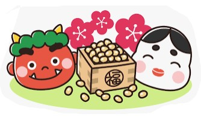
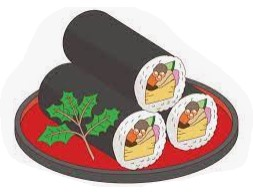

Japan's Annual Event Meal

In Japan, it is customary to eat special dishes that are different from usual during seasonal events and festivals.
For example, on New Year's Day, Hinamatsuri, and Children's Day, we prepare feasts and special foods.
At the turn of the seasons and in the strangest moments of life, we offer a feast to the gods in gratitude for the
food we eat. I have always hoped that happiness would come to me.
Also, it was a great pleasure to eat seasonal foods on the day of the event and enjoy the feeling of the season. We also have some chidren's songs for that.
- January: New Year's Day = Oshugatsu (1/1~1/7)
- February: Setsubun (2/3)
- March: Hinamatsuri (3/3)
- May: Children's Day = Kodomo-no-hi (/5/5)
- September: Jugoya (around 9/15)
- December: Omisoka (1/31)
- Songs: Oshogatsu & Hinamatsuri
February: Setsubun (2/3)

Setsubun (節分）literally means "seasonal division" and is held on the day before the beginning of spring according to the Japanese lunar calendar

Ehomaki is a thick sushi roll filled with seven delicious ingredients and eaten on Setsubun (February 3rd) every year to bring good luck!